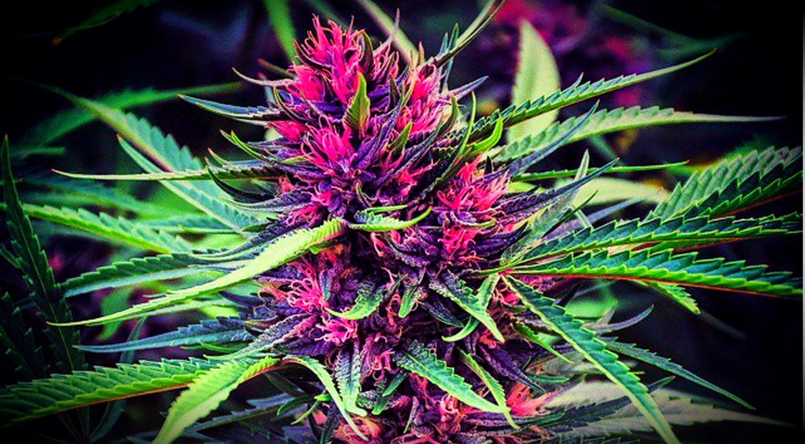
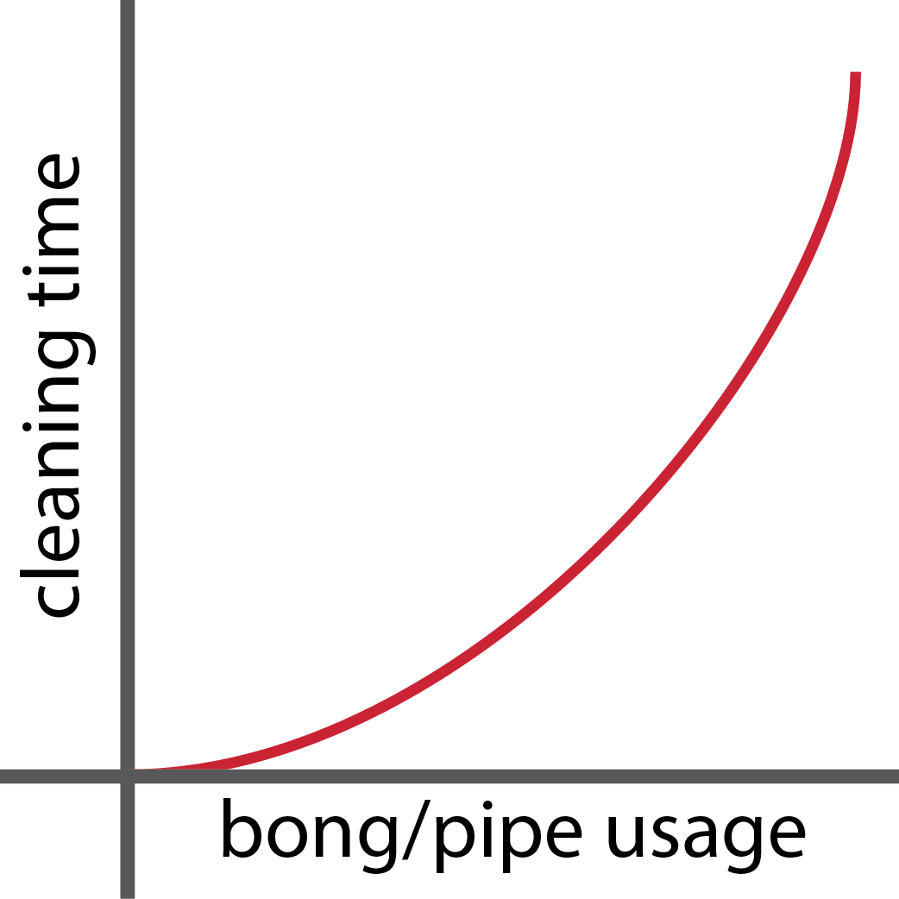
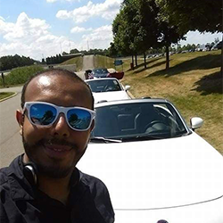

Our Vision
The why of Washee. We love our greens. Sure, there are cool vape pens available
but nothing has ever truly replaced smoking buds for us. With legalization, the
quality of our greens could not be better. And that's what it's really about for us.
We are a team of tinkerers at heart. When we first conceived Washee, we didn't have
a particular technology in mind. Like other smokers, we had to deal with the tar
and resins that accumulate in our pipes. As the pipe gets dirtier, you start wasting
greens as the airflow in your pipe constraints and the flavor of your greens gets
tainted.
Chemical cleaners for pipes suck. You're telling me I have to get my hands
dirty to clean them? Really, that's the best you can do?
We knew deep in our hearts there was an easier
and convenient way to get pipes clean. After all, cannabis is no longer a taboo. It's
an important and large market.
That's what it's all about for us. We don't see ourselves as a company that makes pipes
cleaners.
We see ourselves as a company dedicated to help you make the most out of your greens
and
enjoy them to their fullest.

What is our Early Adopter crowdfund campaign about?
Early adopters are the people who start using or product
before anyone else. Early adopters are arguably the
spark of innovation. They are the first backers in any
new trend.
This help comes when a company needs it most: in its infant
stages. Washee is in such state. We are a startup bootstrapped by
its own founders. We've
experimented and tested
the past year to create the most innovative pipe cleaner out
on the market.
However, the success of a product goes beyond its technical capabilities.
It also involves a great product presentation, HD photos, great video
commercials,
web presence and promotion to fully bring to life and that's exactly
what this campaign is for.
We've developed the product and source manufacturing. Now, we
need your help to get to the next level. To get Washee out there.
This campaign is a prelude to an upcoming Indiegogo campaign. However,
unlike campaigns hosted on Kickstarter and Indiegogo, this campaign
is constraint by number of units that we will sell rather than time.
The units on this campaign are reserved for our early adopters
and contain special rewards and discounts. No more units will be sold
when the campaign is 100% fulfilled.
Most startups sell their first version
units to their most important contributors, early adopters,
and then forget about them.
We want to be different. The rewards on this campaign
are meant to turn the highest risk Early Adopters get
into a unique gift we wont give away to others.
Perks
The Early Adopter perks are divided in 2 types:
Pay full price for a unit and obtain a
limited edition voucher that is exchangeable
for a future version of Washee of
similar size.
Get a unit with a super discount only available on
this campaign.
Use of Funds
This campaign is limited to units.
From the money raised, the COG (cost of good) is saved from every order
along with shipping charges. This means that the portion of the Funds
raised from this campaign needed to fulfill the orders is retained
(and then some). This means the Early adopter units are guaranteed
separately from the Indiegogo campaign and they also ship first.
The remainder of the funds will have the following uses:
- Creation of manufacturing-type prototype for all sizes.
- Creation of media content for Indiegogo promotion (videos, photos, etc).
Plan & Challenges
The production of units for this campaign will be part of the production
as the units we will sell on the Indiegogo campaign. We do this to
take advantage of economies of scale. However, the Early Adopter orders
will be fulfilled first.
The biggest challenge a physical product has from a crowdfund perspective lies
with parts that require heavy tooling. This is a consideration we had from the
beginning when we started development. We were more interested in designing
something that we could fulfill at variable quantities.
We purposely stayed away
from tooling at the cost of somewhat higher cost per part and some aesthetics.
However, this helps us ensure we can deliver a quality product that takes into
account any campaign outcome. This puts us in a comfortable position from a
production stand-point. Learn more about our engineering background
here.
Timeline
Our timeline has been estimated conservatively. It is based on the longest we foresee
each event taking place.
- Early Adopters Crowdfund Campaign. Start in October. Duration: 3 months.
- Manufacturing-type prototypes, media creation, etc. Start in January Duration: 3
months.
- Indiegogo Campaign. Start in April. Duration: 1 month.
- Manufacturing orders. Start in May. Duration: 2 months.
- Shipping orders. Start in July. Duration: 1 month.
Other Ways You Can Help
If you are not ready to buy Washee but would still like to help,
then the best thing you can do is to share this campaign with your friends!
Getting the word out there goes a long way to bringing this project into reality.
You can also win a free Washee if you share with enough friends! Sign-up at
washee and use your share link to accumulate
points
towards a free Washee.
What is Washee?
Washee is the world's first bong and pipe cleaning machine for the home.
Washee cleans your bongs and pipes using nothing but water.
Say goodbye to bottle cleaners, ziploc bags, and getting your hands dirty.
Most bongs and pipes get cleaned in 20 minutes (Check out our
performance section)
Washee uses a combination of heat and mechanical action to leave
your bongs and pipes like the day you bought them. It's harmless
on your pieces and also disinfects them.
How Does Washee Work?
- You place your bong and pipes inside Washee ensuring no air remains inside.
- You then fill Washee with Water.
- Select your cleaning time. Most pieces will need to run for 20 min.
(See performance section)
- Wait for cycle to complete and you are done!
Washee Comes in 3 Sizes
Personal
This is our smallest unit. It's perfect for
spoon pipes and individual pieces.
Bong
You like to invest in larger & artistic bongs or pipes?
Then this Washee is perfect for you.
Commercial
Would you like to generate revenue out of offering a bong
and pipe cleaning service? This Washee is able to clean several
pieces simultaneously and it's equipped with a cooling system
to run non-stop.
Washee Benefits
Easy Breezy
Get your pipes perfectly clean with minimum effort!
No more ziploc bags and having to shake to get resin out.
Save Money

Washee is energy efficient. Running the personal version
30 min/week for a whole year will cost 25 cents* (based on USA data).
Environmental

Washee uses only water and electricity to clean.
No chemicals, no bottles = less pollution
Specs, Performance, Limitations & Recommended Usage
Specifications

The cleaning effect per given volume is similar across all 3 Washee units.
The difference between the units lies in the size of the cleaning volume.
The wattage is increased accordingly in each one to have to maintain the
cleaning effect/volume ratio. This means that the guidelines provided here
apply to all the units.
The cleaning effect is also uniformly distributed across the cleaning tank.
This is not true exactly but it is not a large enough gradient to make it
noticeable.
This means that you can clean several pieces simultaneously on the larger units.
This is particularly relevant for the commercial unit where you may want to
maximize both time and money by cleaning as many pieces as once as possible.
However, if you purchased the Bong sized unit, you could instead clean several
smaller pieces if you wished to.
One of the main cleaning characteristics you would want to know
is the cleaning time given a determined amount of usage of your pipe or bong.
Washee has an exponential curve representing its cleaning cycle duration as a
function of bong/pipe usage.

All of this translate to Washee being better the more often you use it.
There are several reasons why you want to clean your pieces
more often than not.
The geometry of bongs and pipes is a very diverse one. From the incredibly artistic
to
the purely functional, bongs and pipes come in all kinds of shapes. For this
reason,
it is impractical to give exact formulas for cleaning times given a specific usage.
However, expect your pieces to fall within the recommended usage at worst
(meaning that your pipe could even go longer without cleaning - not
that
you would want to do that).
Washee's cleaning effect is tied to the surface area of water in contact with the
tars and
resins that need to be removed. This means that its performance will be best on
pieces with large cavities (such as bongs) and it will have lower performance
on tight passage ways inside the pipe (this is specially true of artistic pipes).
If you are cleaning pieces that have long and very narrow passageways, stick to the
guideline
of cleaning the piece regularly; specially if it is used often.
Limitations
As the cleaning frequency of your piece is reduced, the cleaning time
grows exponentially. If a pipe has been used over an extended period of time
without cleaning, Washee may run into a situation where it will either need
a large amount of time to clean the pipe (in terms of hours) or in a different
case,
it will be unable to remove resin deposits that form inside.
If you have a piece that hasn't been cleaned in months, and you try to clean it
with
Washee, it may take several hours or cycles to do so. However, in some cases, large
resin
and tar deposits are formed inside that are not able to escape or dissolve in the
water.
This is particularly true of pipes with narrow cavities.
It is worthy to note that this is
not a problem particular to Washee. All pipe cleaners have this same issue. Perhaps
you've tried using a bottle cleaner before only to find resin rocks forming inside
which you have to poke and break. This same phenomena can occur with Washee if a
piece has not been cleaned
in a long time. Albeit, Washee
has this problem much less than other cleaners because of the way it removes the
resin.
Why does this happen at all? Resin is the like of substance that likes to stick to
itself.
As you remove it from the glass, it finds other particles similar to itself. If you
haven't
cleaned your piece in a long time, there will be enough resin to attract to itself
faster than it can dissolve in the medium. It is worthy to note, however, that you
will not
encounter this issue if Washee is used as recommended.
Recommended Usage
We've covered Washee's performance and limitations. I hope we gave you a
good overview of Washee's effectiveness which is better when used regularly.
However, performance aside, there are other reasons why it is best
to clean bongs and pipes regularly:
Reasons to clean your pipes more often
- Bacteria and mold thrive on a dirty pipe and you get exposed to it if you don't
clean
your pipe or bong.
-
You start wasting precious greens. As we mentioned, the components in the tars
and resins
attract each other. The more tar and resins you have inside your pipe, the more
of the
psychoactive
components of cannabis keep getting stuck to it, which means your smoke has
less.
-
You waste even more precious greens. The accumulated tar and resins constrain
airflow which greatly
reduces the combustion efficiency of your pipe.
-
The more frequently you clean your pipe, the shorter the cleaning cycles are.
This means you
spend less on electricity.
- A dirty bong or pipe taints the flavor of your bud. Having a clean piece allos
you to
taste the smoke at its best.
Did we convinced you you should clean your pieces regularly? The cool thing is that
Washee makes it extremely easy. You'll have it right there and then and it will do
all the work for you. How cool is that? win/win.
How often do I need to clean my pieces with Washee?
Washee is designed so that you clean your piece
after smoking 1/4 oz through it between 20 to 30 min. This is about
every week or biweekly for many daily users. It's hard to come up with
exact formulas for cleaning time because geometries vary so wildly among pieces
but expect this range at its worst.
To give you a more tangible idea, a normal size spoon pipe with 1/4 oz
smoked through it will require a 20 min cleaning cycle.
Pipes with wide cavities can wait even longer for a
similar cleaning time although we don't recommend it.
About Washee
We are a group of engineers who enjoy cannabis.
We are the kind of people that prefer a smoke at the end of the day rather
than a beer. Needless to say, we are cannabis lovers!
We started Washee to create cool products for smokers. In our opinion,
there aren't enough out there!
As a team, we have extensive experience in product development, manufacturing,
consumer innovation, and electronics.
Washee, Inc is a California corporation located in San Diego, CA. Get in touch by
emailing us at hi@washee.net
Story
by founder Joe Gregory
It was late fall in Michigan 2016. I was working at a innovation company and we
were amidst fulfilling a new product. Those are usually busy times, so when I got home
that day, I was ready to relax and smoke. I packed my bowl and tried to light it up.
I couldn't get a decent hit out. (Both) my pipes were heavily clogged.
I was out of cleaner, so I had to go get some. "Are you s@itting me." That's
the last thing you want to do coming home from work. I reluctancy drove to the
store, bought some cleaners, put my pipes in ziploc bags and started shaking it.
While I was doing that, I started video chatting with my long time friend from
engineering
school Mario Rodriguez. We had been planning to branch off our jobs and create
something
by ourselves. We had ideas on the drawing board, but during that conversation, I
was explaining my pain to Mario getting the cleaners and said "there has to be a better
way."
Light bulbs turned on. That was the beginning of Washee.
We knew we wanted it to
be 100% water based because what could be cooler than that?
2 years later and we've experimented and tested every conceivable way
possible in which you could clean a pipe using water. We have a understanding
of the methods for achieving this outcome in a friendly and energy efficient product.
Today, we've done all the engineering and sourcing. We are ready to
take Washee out on the market and we hope you can be a part of this new story with us.
Founders
Joseph E. Gregory
I have experience in consumer innovation, product development
and prototyping. I've successfully helped developed
consumer products for companies like Whirlpool and Gill.
Linkedin Profile
Mario Rodriguez
When it comes to quality manufacturing, nobody beats Mario.
Mario has experience delivering complex systems on time
and on budget across a global supply chain. Experience working
for Bosch and Chrysler.

Linkedin Profile
Frequently Asked Questions
What is the estimate time the units will ship?
Early Adopter units are the first to ship and are scheduled for July 2019.
Check out our timeline here.
Where do you ship to?
This campaign is only delivering within USA. Extended shipping will
be available during Indiegogo campaign.
I want to wait for the Indiegogo campaign instead. where
do I sign up?
You can sign-up to be alerted prior to our Indiegogo launch at
this landing page.
I want to spread the word about Washee and collect points
to earn a free unit. How do I do that?
Sign up at our landing page and use the share
link
at the following window to collect points and earn rewards. New email
sign-ups need to pass our fraud prevention system in order to count as points.
Making fake email accounts wont work.
How can I get in contact?
Email us at hi@washee.net
Can Washee clean more than one bong/pipe at a time?
Yes, you can clean as many pieces as you can fit. However,
only the section of the pieces that are in contact with water
will get cleaned.
Can I become an investor?
We would love to talk. Email investors@washee.net.
What is different between this campaign and the upcoming Indiegogo?
There are 2 differences: the perks and the campaign metrics.
The perks differ in that the 2x1 voucher and the discounts from this campaign are
unique to this campaign
only. The Indiegogo campaign will no have the 2x1 voucher and the discounts wont be
as large.
They are also different in the metrics. While the Indiegogo campaign is limited by
time (1 month),
this campaign is instead limited by the amount of units being sold.
Why are you throwing a crowdfund campaign on your site before launching
an Indiegogo campaign?
Contrary to popular belief, running a crowdfund campaign is not without costs (and
it's also not cheap). From having presentable prototypes to HD videos and photos,
going to
events, etc, the costs can be significant. In addition, we are a group of engineers
and
there are areas (such as marketing) in which we need help.
Running this campaign will provide us with the
resources to promote the product adequately. The success of a product goes beyond
engineering.
Presentation and
proper marketing play an important role in seeing a brand succeed. The funds from
this campaign
will provide us with that. We thought the best way to do it would be to give
special perks to our
Early Adopters.
Can I exchange my 2x1 voucher for a current version?
Yes, you can exchange your 2x1 future voucher for a current version. Please get
in contact so
we can do the proper arrangements.
I want to purchase the commercial unit and offer a
cleaning service. How can I charge?
Here we provide 2 approaches you can take.
You can either charge your customers a monthly fee and clean any pieces they
bring in or
you can charge per cleaning cycle. You can wash as many pieces as you can fit
inside Washee
(ensuring there is no air trapped inside). The most economic approach will be
to collect
pieces that will be cleaned and try to make them in a single batch (or as many
needed). Consumers
can pick them up the next day or so which brings them back to your store.
Running the commercial unit for 1 hour will spend less than $0.10 in electric
cost (US average).
Charging a couple of bucks for spoon pipes and similar sizes and more for bongs
and such will
be profitable.